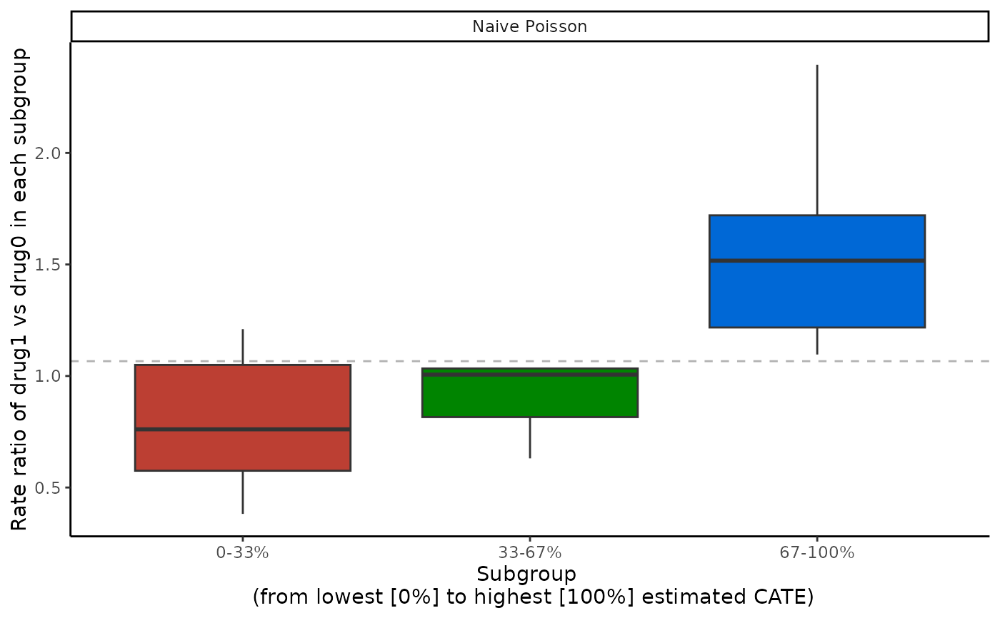

A set of box plots of estimated ATEs from the "precmed" object
Source: R/crossv.R
boxplot.precmed.RdProvides box plots which depict distributions of estimated ATEs for each multi-category subgroup in
the validation set across all cross-validation iterations. The subgroups are mutually exclusive and
are categorized by the CATE score percentiles (prop.multi specified in catecv() or
catecvmean()). Box plots of mutually exclusive subgroups are constructed separately by scoring
method specified in catecv(). This should be run only after results of catecv() or
catecvmean()) have been obtained.
Usage
# S3 method for class 'precmed'
boxplot(
x,
ylab = NULL,
plot.hr = FALSE,
title = waiver(),
theme = theme_classic(),
...
)Arguments
- x
An object of class
"precmed".- ylab
A character value for the y-axis label to describe what the ATE is. Default is
NULL, which creates a default y-axis label based on available data.- plot.hr
A logical value indicating whether the hazard ratios should be plotted in the validation curves (
TRUE). Otherwise, the restricted mean time lost is plotted (FALSE). This argument is only applicable to survival outcomes. Default isFALSE.- title
The text for the title
- theme
Defaults to
theme_classic(). Other options includetheme_grey(),theme_bw(),theme_light(),theme_dark(), andtheme_void()- ...
Other parameters
Value
Returns sets of box plots, one set for each scoring method, over each of the multi-category subgroups. A gray horizontal dashed line of the overall ATE is included as a reference.
Details
boxplot() takes in outputs from catecv() and generates
the box plots of estimated ATEs for multi-category subgroups of the validation set.
The box plots together with the overall ATE reference line can help compare the scoring methods'
ability to distinguish subgroups of patients with different treatment effects.
For a given scoring method, box plots showing increasing or decreasing trends across the multi-category subgroups indicate presence of treatment effect heterogeneity (and the ability of the scoring method to capture it). On the contrary, box plots which are relatively aligned across the multi-category subgroups indicate absence of treatment effect heterogeneity (or the inability of the scoring method to capture it).
References
Yadlowsky, S., Pellegrini, F., Lionetto, F., Braune, S., & Tian, L. (2020). Estimation and validation of ratio-based conditional average treatment effects using observational data. Journal of the American Statistical Association, 1-18. https://www.tandfonline.com/doi/full/10.1080/01621459.2020.1772080
Examples
# \donttest{
# Count outcome
eval_1 <- catecv(response = "count",
data = countExample,
score.method = "poisson",
cate.model = y ~ age + female + previous_treatment +
previous_cost + previous_number_relapses +
offset(log(years)),
ps.model = trt ~ age + previous_treatment,
higher.y = FALSE,
cv.n = 5)
#> Warning: Variable trt was recoded to 0/1 with drug0->0 and drug1->1.
boxplot(eval_1, ylab = "Rate ratio of drug1 vs drug0 in each subgroup")

# Survival outcome
library(survival)
tau0 <- with(survivalExample,
min(quantile(y[trt == "drug1"], 0.95), quantile(y[trt == "drug0"], 0.95)))
eval_2 <- catecv(response = "survival",
data = survivalExample,
score.method = c("poisson", "randomForest"),
cate.model = Surv(y, d) ~ age + female + previous_cost +
previous_number_relapses,
ps.model = trt ~ age + previous_treatment,
initial.predictor.method = "randomForest",
ipcw.model = ~ age + previous_cost + previous_treatment,
tau0 = tau0,
higher.y = TRUE,
cv.n = 5,
seed = 999)
#> Warning: Variable trt was recoded to 0/1 with drug0->0 and drug1->1.
boxplot(eval_2, ylab = "RMTL ratio of drug1 vs drug0 in each subgroup")
#> Warning: Removed 10 rows containing non-finite outside the scale range
#> (`stat_boxplot()`).
# }